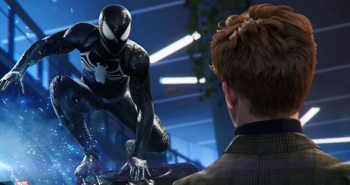
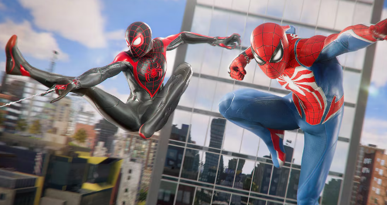

Spider-Man 2
Precio: $319.000
Plataforma: PlayStation 5
Descripción del Juego
Spider-Man 2 para PS5 continúa la historia de Miles Morales y Peter Parker mientras enfrentan nuevas amenazas en Nueva York. Este juego de acción y aventura sigue a los dos héroes luchando contra el villano Venom y otros enemigos poderosos, todo mientras exploran una ciudad más expansiva y dinámica. La jugabilidad introduce nuevas mecánicas, como el uso combinado de ambos Spider-Men, y mejoras en los movimientos y la narrativa, ofreciendo una experiencia más inmersiva. Con gráficos mejorados y rendimiento optimizado para PS5, el juego se presenta como una de las mejores experiencias en la nueva generación.
Características:
- Juego de acción y aventura con Peter Parker y Miles Morales como protagonistas.
- Gráficos impresionantes con soporte para 4K y HDR, optimizados para PS5.
- Exploración y combate mejorados en una ciudad de Nueva York más grande y detallada.
- Nuevo sistema de habilidades y ataques combinados entre los dos Spider-Men.
- Historia profunda con enemigos icónicos, como Venom, y momentos llenos de emoción.
Imágenes del Juego


Requisitos del Sistema (PS5)
- Almacenamiento requerido: 100 GB
- Conexión a Internet: Necesaria para actualizaciones y contenido adicional
- Resolución: Compatible con 4K y HDR